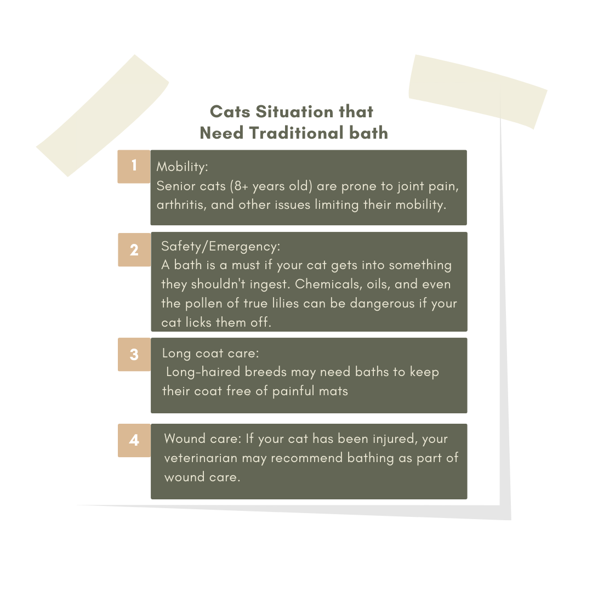

Bath For Cats

Generally, cats don't need us to bathe them. They're experts in staying clean. In fact, fur covered in water
can feel dirty to a cat. It's a foreign substance they don't want on their coat. They do a great job keeping themselves clean.
Scroll down to know more